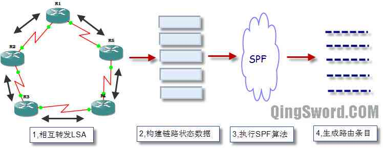
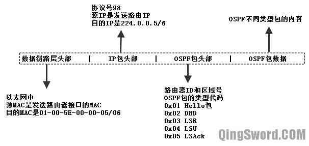
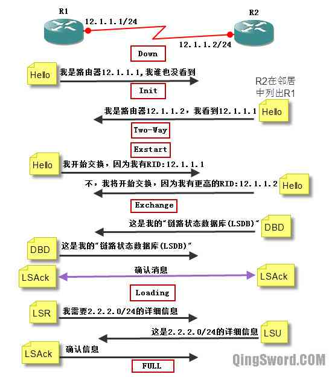
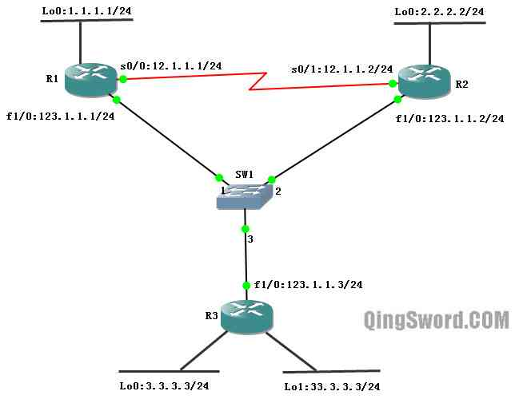
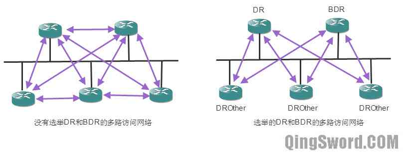

[CCNA图文笔记]-18-OSPF协议详解
引言
这篇文章主要介绍链路状态路由协议OSPF的特征、术语、包类型、邻居关系的建立、RID的选择、DR和BDR的选举、度量值的计算、默认路由、验证等。
文章目录
- 0×1.链路状态路由协议概述
- a.工作过程
- b.优缺点
- 0×2.OSPF概述和基本配置
- a.特性
- b.术语
- c.包格式
- d.包类型
- e.邻居关系的建立过程
- f.基本配置实例
- g.Router ID选举规则
- h.DR和BDR选举规则
- i.度量值计算方法
- 0×3.OSPF高级配置
- a.验证实例
- b.默认路由实例
0×1.链路状态路由协议概述
链路状态路由协议使用Dijkstra算法，也称SPF（Shortest Path First，最短路径优先）算法。常见的链路状态路由协议有：OSPFv2、OSPFv3等。这篇文章主要针对OSPFv2，OSPFv3是面向IPv6的且不兼容IPv4，暂不介绍。
a.工作过程
1）每台路由器学习激活的直接相连的网络。
2）每台路由器和直接相连的路由器互交，发送Hello报文，建立邻居关系。
3）每台路由器构建包含直接相连的链路状态的LSA（Link-State Advertisement，链路状态通告）。链路状态通告(LSA)中记录了所有相关的路由器，包括邻路由器的标识、链路类型、带宽等。
4）每台路由器泛洪链路状态通告（LSA）给所有的邻路由器，并且自己也在本地储存邻路由发过来的LSA，然后再将收到的LSA泛洪给自己的所有邻居，直到在同一区域中的所有路由器收到了所有的LSA。每台路由器在本地数据库中保存所有收到的LSA副本，这个数据库被称作"链路状态数据库（LSDB，Link-State Database）"
5）每台路由器基于本地的"链路状态数据库(LSDB)"执行"最短路径优先（SPF）"算法，并以本路由器为根，生成一个SPF树，基于这个SPF树计算去往每个网络的最短路径，也就得到了最终的路由表。
下图（图1）演示了链路状态路由协议路由表的生成过程：
b.优缺点
优点：运行链路状态路由协议的路由器通过LSA的交换，最后独立的计算出到每个网络的最短路径，相对距离矢量路由具有更强的全局观；收到邻居的LSA后立即泛洪，并且本路由再执行SPF算法，比距离矢量路由有更高的收敛速度（EIGRP除外，EIGRP是高级距离矢量路由协议有更快的收敛速度）；当检测到拓扑发生变化时立即发送更新；多区域设计，可以将一些问题限制在较小的区域中。
缺点：内存需求高，需要更强的CPU的支持，在网络初始化时，大量链路状态包泛洪，会影响网络的可用带宽。
0×2.OSPF概述和基本配置
OSPF（Open Shortest Path First，开放最短路径优先）是一个被各厂商设备广泛支持的链路状态路由协议。
a.特性
OSPF执行IETF标准，IETF标准被不同厂商的设备所支持；执行SPF算法，不会产生环路；支持VLSM和CIDR；可以用于大型网络；层次型设计，易扩展；区域化设计，减小路由更新给设备带来的负担；快速收敛，使用触发式更新；支持针对区域和链路的验证。执行OSPF的路由默认每隔30分钟会泛洪一次链路状态通告(LSA)，称为链路状态刷新（并非周期性更新）；当一条LSA被接收并被储存到链路状态数据库中后，路由器会给这条记录增加一个老化时间标识，默认是一小时，所以为了防止一些正常的LSA被清除，始发这条LSA的路由会每隔30分钟泛洪一次这条LSA的一个新拷贝。
b.术语
链路（Link）：当一个接口加入OSPF进程，就被当做是OSPF的一条链路。
链路状态（Link-State）：包括接口的IP、子网、网络类型、链路花费、链路上的邻居等。
路由器ID（Router ID，简称RID）：RID是一个用来标识路由器的IP地址，可以在OSPF路由进程中手工指定；如果没有指定，路由器默认选择回环接口中最高的IP作为RID；如果没有回环地址，路由器使用所有激活的物理接口中最高的IP作为RID。
邻居（Neighbor）：两台或多台路由连接在一个公共的网络上；比如两台路由通过串行线路相连，或多台路由通过以太网相连。
邻接（Adjacency）：邻接是两台路由器之间的关系，OSPF只与建立了邻接关系的邻居共享路由信息。
区域（Area）：OSPF通过划分区域来实现分层设计，跨越两个或两个以上区域的路由被称作ABR（Area Border Router，区域边界路由）。所有的区域都和"Area 0"相连，"Area 0"被称作骨干区域，骨干区域路由器具有整个自制系统中所有路由条目，LSA的扩散仅限制在区域内，通过划分多个区域可以减小LSA扩散过程中对硬件的负担。
指定路由器（Designated Router，简称RD）：当OSPF链路被连接到多路访问的网络中时，需要选择一台指定路由器（DR），每台路由器都把拓扑变化发给DR和BDR，然后由DR通知该多路访问网络中的其他路由器。
备用的指定路由器（Backup Designated Router,简称BDR）：当DR发生故障的时候，BDR转变成DR，接替DR工作。
花费（Cost）：OSPF中使用的唯一度量值，使用链路的带宽计算得来。
c.包格式
OSPF和EIGRP一样，也被设计成一个网络层协议，协议号89，包格式如下图（图2）：
包格式解释如下：
数据链路层头部：OSPF使用的组播IP地址是224.0.0.5（非DR和BDR路由使用的地址）和224.0.0.6（DR和BDR使用的组播地址），这两个组播地址对应的MAC地址分别为："01-00-5E-00-00-05"和"01-00-5E-00-00-06"。
包头部：协议号是89，源IP是发送路由的IP，目的IP是组播IP地址224.0.0.5或224.0.0.6。
OSPF头部：包括路由ID和所在的区域号、包的类型代码（5种类型的包代码）。
OSPF包对应的数据：不同包具有不同的内容。
d.包类型
1）Hello包
Hello报文用来建立和维护OSPF路由器间的邻接关系，它的主要作用是：发现OSPF邻居，建立和维护邻接关系；在多路访问中选择DR和BDR。OSPF泛洪链路状态通告给其他路由前需要先建立邻接关系，通过在OSPF协议的接口上发送Hello报文判断是否有其他OSPF路由器运行在相同的链路上。
双方要建立邻接关系，Hello报文中的区域号、Hello间隔和dead间隔、验证（如果有）以及区域类型都要一致。在广播（如以太网）和点对点链路（如串行线路）中，Hello间隔默认是10秒；dead时间默认是Hello间隔的4倍（40秒）；非广播多路访问（NBMA），比如帧中继网络中默认Hello间隔是30秒。
可以通过下面的命令修改默认的Hello时间和dead时间：
/*修改串行线路s0/0的Hello间隔为5秒，死亡间隔为20秒。*/ Router(config)#int s 0/0 Router(config-if)#ip ospf hello-interval 5 Router(config-if)#ip ospf dead-interval 20 Router(config-if)#end
2）DBD（Database Description，数据库状态描述包）
DBD包是发送端对自己链路状态数据库的一个简短描述，接收路由器根据接收到的DBD包对比自己的链路状态数据库，检测发送端和接收端的链路状态数据库是否同步。
3）LSR（Link-State Request，链路状态请求包）
接收端可以发送LSA来请求接收到的DBD中的某些详细信息。
4）LSU（Link-State Update，链路状态更新包）
LSU用来更新OSPF路由信息，回复LSR请求。
5）LSAck（Link-State Acknowledgement，链路状态确认）
当收到一个LSU，路由器发送LSAck确认。
e.邻居关系的建立过程
OSPF中邻居建立过程演示图（图3）如下：

Down：OSPF初始状态，还没有开始交换信息。
Init：交换信息初期，表示已经收到了邻居的Hello报文，但是报文中没有列出本路由的RID，也就是说对方还没有收到本路由发出的Hello报文。
Two-Way：双向阶段，双方都收到了对方发送的Hello报文，建立了邻居关系。在多路访问的网络中，两个接口状态是DROther的路由器之间将停留在此状态，其他情况将继续转入高级状态。在此状态下的路由器是不能共享路由信息的，想共享路由信息，必须建立邻接关系。（注意邻居关系和邻接关系的区别）
Exstart：准备开始交换阶段，双方通过Hello报文决定主从关系，最高RID的路由将成为主路由，最先发起交换。主从关系确立后进入下一个阶段。
Exchange：开始交换阶段，路由器将本地的"路由状态数据库(LSDB)"用"数据库描述(DBD)"报文来描述，然后发给邻路由。如果这个阶段中的路由收到不在其数据库中的有关链路的信息，那么在下一个阶段中将请求对方发送该路由条目的完整信息。
Loading：加载阶段，路由器通过发送"链路状态请求(LSR)"，来向邻居请求一些路由条目的详细信息。邻居则会使用"链路状态更新包(LSU)"来回复LSR请求，收到邻居发回的LSU后，再发送LSAck向发送LSU的路由进行确认。
FULL：完全邻接状态，Loading结束后，路由器之间就变成了"Full adjacency"。
f.基本配置实例
使用OSPF配置下面的拓扑，三台c3640路由使用以太网接口连接在一台二层非网管交换机上（GNS3中自带的那个"Ethernet switch"，非IOU中的二层可网管交换机），设备间连线和IP如下图（图4）所示：
R1配置：
R1(config)#int s 0/0 R1(config-if)#ip add 12.1.1.1 255.255.255.0 R1(config-if)#no shut R1(config-if)#int lo 0 R1(config-if)#ip add 1.1.1.1 255.255.255.0 R1(config-if)#no shut R1(config-if)#int fa 1/0 R1(config-if)#ip add 123.1.1.1 255.255.255.0 R1(config-if)#no shut /*启用OSPF进程，进程号1只具有本地意义*/ R1(config-if)#router ospf 1 R1(config-router)#net 123.1.1.0 0.0.0.255 area 0 R1(config-router)#net 1.1.1.0 0.0.0.255 area 0 R1(config-router)#net 12.1.1.0 0.0.0.255 area 0 R1(config-router)#end /* * "router ospf 1"中的OSPF进程号1，只具有本地意义，每个路由可以不同， * "net 123.1.1.0 0.0.0.255 area 0"OSPF网络的宣告使用反掩码形式， * "area 0"是OSPF区域号，同一个区域中的路由器区域号要保持一致， * CCNA中只涉及区域0，也就是骨干区域的配置。 * 如果要将路由器上所有接口都宣告进OSPF进程，可以使用下面的命令： * "net 0.0.0.0 255.255.255.255 area 0" */
R2配置：
R2(config)#int s 0/1 R2(config-if)#ip add 12.1.1.2 255.255.255.0 R2(config-if)#no shut R2(config-if)#int lo 0 R2(config-if)#ip add 2.2.2.2 255.255.255.0 R2(config-if)#no shut R2(config-if)#int fa 1/0 R2(config-if)#ip add 123.1.1.2 255.255.255.0 R2(config-if)#no shut R2(config-if)#router ospf 2 R2(config-router)#net 0.0.0.0 255.255.255.255 area 0 R2(config-router)#end /*"net 0.0.0.0 255.255.255.255 area 0"将R2上的所有接口都发布进OSPF进程*/
R3配置：
R3(config)#int fa 1/0 R3(config-if)#ip add 123.1.1.3 255.255.255.0 R3(config-if)#no shut R3(config-if)#int lo 0 R3(config-if)#ip add 3.3.3.3 255.255.255.0 R3(config-if)#no shut R3(config-if)#int lo 1 R3(config-if)#ip add 33.3.3.3 255.255.255.0 R3(config-if)#no shut R3(config-if)#router ospf 3 R3(config-router)#net 123.1.1.0 0.0.0.255 area 0 R3(config-router)#net 3.3.3.0 0.0.0.255 area 0 R3(config-router)#end /*R3并没有将Lo1接口宣告进OSPF进程*/ /* * 对于OSPF的宣告还有几种可以使用的不规范格式： * * "net 123.1.1.1 0.0.0.0 area 0" * 指定仅有一个IP（123.1.1.1）宣告进OSPF进程。 * * "net 123.1.1.0 255.255.255.0 area 0", * 这条命令和"net 123.1.1.0 0.0.0.255 area 0"效果相同。 * * "net 0.0.0.0 0.0.0.0 area 0", * 这条命令和"net 0.0.0.0 255.255.255.255 area 0"效果相同。 * * 上面几种格式都能被正确识别，但是最好使用规范格式。 */
OSPF路由表：
/* * R1路由表，显示如下: * R1学习到了R2和R3上面的回环接口的IP地址， * 因为R3的Lo1并没有宣告进OSPF进程，所以没有33.3.3.3这个地址。 * "O"表示是从OSPF学习到的路由条目。 */ R1#show ip route 1.0.0.0/24 is subnetted, 1 subnets C 1.1.1.0 is directly connected, Loopback0 2.0.0.0/32 is subnetted, 1 subnets O 2.2.2.2 [110/2] via 123.1.1.2, 00:15:04, FastEthernet1/0 3.0.0.0/32 is subnetted, 1 subnets O 3.3.3.3 [110/2] via 123.1.1.3, 00:15:04, FastEthernet1/0 123.0.0.0/24 is subnetted, 1 subnets C 123.1.1.0 is directly connected, FastEthernet1/0 12.0.0.0/24 is subnetted, 1 subnets C 12.1.1.0 is directly connected, Serial0/0
在OSPF中所有的回环接口都被自动宣告成32位的主机路由"/32"，如果想显示回环接口的实际子网掩码，可以使用下面的命令调整：
/*在R1、R2、R3宣告进OSPF的回环接口上执行下面的命令*/ R1(config)#int lo 0 R1(config-if)#ip ospf network point-to-point
执行完成后，再次查看路由表就会发现所有回环接口的子网掩码都变成了实际的子网掩码。
OSPF邻居表：
R1#show ip ospf neighbor Neighbor ID Pri State Dead Time Address Interface 2.2.2.2 0 FULL/ - 00:00:37 12.1.1.2 Serial0/0 2.2.2.2 1 FULL/BDR 00:00:37 123.1.1.2 FastEthernet1/0 33.3.3.3 1 FULL/DROTHER 00:00:31 123.1.1.3 FastEthernet1/0 R1# /* * Neighbor ID：邻居的RID，通过上面的输出可以看到R2的RID是2.2.2.2 * R3的RID是33.3.3.3，R1和R2通过不同的接口（以太网和串行线路）， * 建立了两次邻居关系。 * * Pir：OSPF邻居接口的优先级，接口优先级用于DR和BDR的选举， * 以太网接口接口的默认优先级是1，串行线路不需要选举DR和BDR所以优先级是0， * 0代表不参与选举。 * * State：邻居路由器的状态，FULL代表已经建立邻接关系， * 斜杠"/"后面是选举的DR或BDR标识，因为串行线路不需要选举，所以是"-", * "FULL/BDR"表示R2是BDR，R3是DROTHER，除了DR和BDR的其余路由器都是DROTHER。 * 所以R1自己就是DR了。稍后会介绍DR和BDR的选举过程。 * * Dead time：默认的死亡时间是hello时间的4倍，即40秒。 * 死亡时间是一个倒计时，计时器为0时，该邻居被删除。 * * Address：邻居直连接口的IP地址。 * * Interface：本路由的外出接口。 */
OSPF拓扑表：
R1#show ip ospf database OSPF Router with ID (1.1.1.1) (Process ID 1) Router Link States (Area 0) Link ID ADV Router Age Seq# Checksum Link count 1.1.1.1 1.1.1.1 1087 0x80000006 0x0096BA 4 2.2.2.2 2.2.2.2 486 0x80000004 0x001832 4 33.3.3.3 33.3.3.3 953 0x80000004 0x00358D 2 Net Link States (Area 0) Link ID ADV Router Age Seq# Checksum 123.1.1.1 1.1.1.1 292 0x80000003 0x00304B /*在同一个区域中的所有路由器的OSPF拓扑表都是相同的*/
g.Router ID选举规则
Router ID简称RID，用来唯一标示OSPF网络中的每一台路由器。如果两条OSPF路由器的RID一样，彼此间无法建立邻接关系。RID是以IP地址的形式出现的，按照下面的顺序来选举RID：
1）Router-id 配置命令最优先
首先在R3上查看一下默认选举出来的RID：
R3#show ip protocols Routing Protocol is "ospf 3" /*默认选出来的RID是lo1接口的IP*/ Router ID 33.3.3.3
在R3上手工配置Router ID：
R3(config)#router ospf 3 /*将RID配置成8.8.8.8*/ R3(config-router)#router-id 8.8.8.8 /*路由器提示需要重启OSPF进程来使更改生效*/ Reload or use "clear ip ospf process" command, for this to take effect R3(config-router)#end /*重启OSPF进程*/ R3#clear ip ospf process Reset ALL OSPF processes? [no]: y /*输入y回车*/ /*再次查看协议，发现RID更改成了8.8.8.8*/ R3#show ip protocols ... Router ID 8.8.8.8 ...
从上面手动配置RID来看，RID可以是一个并不存在的IP地址，RID仅仅作为路由的标识，不用于寻址。
2）如果没有手动指定RID，路由器默认使用最大已激活的回环接口IP作为RID。（注意，这个最大并不是接口号最大，而是IP地址最大，比如33.3.3.3大于3.3.3.3）
现在取消R3手动配置的RID，并且关闭Lo1接口，这个时候最大的已激活回环接口IP应该是lo0的3.3.3.3，重启OSPF进程看看结果是否和预测的一样：
R3(config)#router ospf 3 /*删除手动RID配置*/ R3(config-router)#no router-id Reload or use "clear ip ospf process" command, for this to take effect R3(config-router)#int lo 1 /*关闭Lo1，它将处于非激活状态*/ R3(config-if)#shutdown R3(config-if)#end R3#clear ip ospf process Reset ALL OSPF processes? [no]: y /*再次查看协议，RID果然变成了3.3.3.3*/ R3#show ip protocols ... Router ID 3.3.3.3 ...
3）如果路由器没有手动指定RID，也没有激活的回环接口，路由器默认选择最大激活的物理接口的IP地址作为RID。（接口的IP最大，而不是接口号最大）
下面关闭R3的lo0接口，再次重启OSPF进程，看看RID的变化情况：
R3(config)#int lo 0 R3(config-if)#shut R3(config-if)#end R3#clear ip ospf process Reset ALL OSPF processes? [no]: y /*查看协议*/ R3#show ip protocols Routing Protocol is "ospf 3" ... Router ID 3.3.3.3 /*看到这里大家可能觉得奇怪，为什么还是回环接口的地址作为RID，回环地址明明已经全部关闭了，这是一个小bug，需要手动配置RID然后再删除手动配置的方法来让物理接口成为RID*/ R3#conf t R3(config)#router ospf 3 /*首先手动配置一个RID*/ R3(config-router)#router-id 5.5.5.5 Reload or use "clear ip ospf process" command, for this to take effect R3(config-router)#end /*重启OSPF进程*/ R3#clear ip ospf process Reset ALL OSPF processes? [no]: y R3#conf t R3(config)#router ospf 3 /*接着清除这个手动配置的RID*/ R3(config-router)#no router-id Reload or use "clear ip ospf process" command, for this to take effect R3(config-router)#end /*再次重启OSPF进程*/ R3#clear ip ospf process Reset ALL OSPF processes? [no]: y /*这时候再次查看协议，现在RID变成了最大激活的物理接口IP地址了*/ R3#show ip protocols Routing Protocol is "ospf 3" ... Router ID 123.1.1.3
h.DR和BDR选举规则
首先用下面的图（图5）来说明一下为什么多路访问的以太网中需要选举DR和BDR，选举它们有什么好处：
在上图的多路访问的网络中，如果没有选举DR和BDR，为了交互路由信息，每台路由器都需要和其他路由建立邻接关系，就会有10个邻接关系，如果其中一台路由离开，要和所有的路由断开邻接关系，新的路由加入，也需要和所有路由建立邻接关系，这样会影响收敛效率。
如果选举了DR和BDR，那么所有DROther路由器只需要和DR以及BDR建立邻接关系即可，DROther之间的关系停留在Two-Way状态，如果网络上有路由条目更新，DROther向组播地址224.0.0.6发出，224.0.0.6是DR和BDR的组播地址，DR接收到这个更新后，再用224.0.0.5组播地址向其他的DROhter发送LSA。这样不仅加快的网络收敛速度，也节约了网络带宽的占用。
在多路访问网络中需要选举DR和BDR，比如广播型多路访问的网络以太网、令牌环网、FDDI；非广播型多路访问的网络帧中继、X.25、SMDS。点对点或点对多点网络不需要选举，如PPP或HDLC封装的点对点线路。
DR和BDR选举规则：
1）OSPF路由器选择网络中接口优先级最高的路由器为DR，接口优先级次高的路由器为BDR，以太网接口默认的优先级都为1。
2）如果优先级相同，将使用RID最高的为DR，次高的为BDR。
按照上面的选举规则，查看R3的邻居表：
/*发现R3的邻居表的显示中，并没有像DR和BDR选举规则中描述的那样，反而R1是DR*/ R3#show ip ospf neighbor Neighbor ID Pri State Dead Time Address Interface 1.1.1.1 1 FULL/DR 00:00:30 123.1.1.1 FastEthernet1/0 2.2.2.2 1 FULL/BDR 00:00:34 123.1.1.2 FastEthernet1/0
这是因为，DR和BDR的选举在设计的时候考虑到网络的稳定性，并没有使用抢占机制。假设此时R1、R2、R3同时启动，因为优先级都为1，所以按照路由的RID，应该R3成为DR，R2成为BDR，R1是DROther，但是前面的配置中，R3的OSPF进程重新启动过，相当于DR离开，此时身为BDR的R2升级成为DR，而身为DROther的R1升级成为BDR，如果此时R2也重启了进程，那么身为BDR的R1升级成为DR，身为DROther的R3升级成为BDR，R2变成了DROther，而R3此时如果重启OSPF，R2将从DROther升级成为BDR，就出现了现在显示的这个样子。其实就是一个顶替机制，DR离开BDR顶替DR，DROther再顶替BDR的位置。
可以通过下面的命令让R3永远是DR：
/*将R1和R2的以太网的优先级调成0*/ R1(config)#int fa 1/0 R1(config-if)#ip ospf priority 0 R1(config-if)#end R2(config)#int fa 1/0 R2(config-if)#ip ospf priority 0 R2(config-if)#end /*查看R2的邻居表，现在R1和R2都停留在了2WAY状态，R3是DR*/ R2#show ip ospf neighbor Neighbor ID Pri State Dead Time Address Interface 1.1.1.1 0 2WAY/DROTHER 00:00:33 123.1.1.1 FastEthernet1/0 123.1.1.3 1 FULL/DR 00:00:36 123.1.1.3 FastEthernet1/0 1.1.1.1 0 FULL/ - 00:00:37 12.1.1.1 Serial0/1 /*查看R3的拓扑表,发现R1和R2都是DROther*/ R3#show ip ospf neighbor Neighbor ID Pri State Dead Time Address Interface 1.1.1.1 0 FULL/DROTHER 00:00:34 123.1.1.1 FastEthernet1/0 2.2.2.2 0 FULL/DROTHER 00:00:36 123.1.1.2 FastEthernet1/0
这个时候如果R3出现了故障Down掉了，R1和R2将不能通过以太网正常的交换OSPF信息。另外必须强调一点，DR和BDR的选举是基于接口的，比如一台路由器的某个接口可能在那个网段是DR，但另外一个接口在另外一个网段却是BDR或者DROther，这都是有可能的。
i.度量值计算方法
OSPF中使用的度量值是"花费（Cost）"，默认OSPF使用100Mb/s作为参考带宽，使用100Mb/s除以实际链路带宽，得出的值取整（对于小于0的结果，取1），就是那条链路上OSPF的度量值，即"花费"。
比如串行线路的带宽是1.544M，快速以太网的带宽是100M，计算他们的"花费"：
串行线路的花费=100M/1.544≈64 (取整，且不四舍五入)
快速以太网线路花费=100M/100M=1
继续上面（图4）的实验，将R1和R2的快速以太网接口的优先级再次调整成1，并且开启R3的lo0接口，然后我们查看R1的OSPF路由条目验证这一点：
/*仅显示OSPF条目*/ R1#show ip route ospf 2.0.0.0/24 is subnetted, 1 subnets O 2.2.2.0 [110/2] via 123.1.1.2, 00:03:40, FastEthernet1/0 3.0.0.0/24 is subnetted, 1 subnets O 3.3.3.0 [110/2] via 123.1.1.3, 00:03:40, FastEthernet1/0 R1# /* * 在"[110/2]"中110是OSPF的默认管理距离，2是花费， * 去往"2.2.2.0/24"的花费是2，就是快速以太网的花费加上回环接口的花费， * 因为回环接口的带宽非常高，用100M除会小于0，所以取1。 */
关闭R1的快速以太网接口，再次查看R1路由表：
R1(config)#int fa 1/0 R1(config-if)#shut R1(config-if)#end /* * "2.2.2.0 [110/65] via 12.1.1.2"因为数据都要经过串行线路，此时的花费变成了65， * "3.3.3.0 [110/66]"这个66是串行线路花费64加上以太网花费1,再加上回环地址花费1。 */ R1#show ip route ospf 2.0.0.0/24 is subnetted, 1 subnets O 2.2.2.0 [110/65] via 12.1.1.2, 00:00:05, Serial0/0 3.0.0.0/24 is subnetted, 1 subnets O 3.3.3.0 [110/66] via 12.1.1.2, 00:00:05, Serial0/0 123.0.0.0/24 is subnetted, 1 subnets O 123.1.1.0 [110/65] via 12.1.1.2, 00:00:05, Serial0/0
可以通过下面的方法修改计算花费的参考带宽：
R1(config)#router ospf 1 R1(config-router)#auto-cost reference-bandwidth 10000 % OSPF: Reference bandwidth is changed. Please ensure reference bandwidth is consistent across all routers. R1(config-router)#end /* * 将参考带宽改成10000M， * 路由器提示我们，在所有的路由上都执行这条命令，让它们拥有相同的参考带宽。 */
将所有路由的参考带宽全部设置成10000M后，再次查看R1路由表:
R1#show ip route ospf 2.0.0.0/24 is subnetted, 1 subnets O 2.2.2.0 [110/6477] via 12.1.1.2, 00:00:33, Serial0/0 3.0.0.0/24 is subnetted, 1 subnets O 3.3.3.0 [110/6577] via 12.1.1.2, 00:00:33, Serial0/0 123.0.0.0/24 is subnetted, 1 subnets O 123.1.1.0 [110/6576] via 12.1.1.2, 00:00:33, Serial0/0
这里拿去往3.3.3.0/24网络的6577举例计算花费：
R1和R2相连的串行链路花费=10000M/1.544M≈6476（取整且不四舍五入）
R2去往R3中间是快速以太网线路，花费=10000M/100M=100
R3上的Lo1接口的花费=10000M/8000M≈1（取整且不四舍五入）
所以结果就是这三条线路花费的总和，即6577。
可以通过下面的命令查看某接口的OSPF信息：
R1#show ip ospf interface s 0/0 Serial0/0 is up, line protocol is up Internet Address 12.1.1.1/24, Area 0 Process ID 1, Router ID 1.1.1.1, Network Type POINT_TO_POINT, Cost: 64 Transmit Delay is 1 sec, State POINT_TO_POINT, Timer intervals configured, Hello 10, Dead 40, Wait 40, Retransmit 5 oob-resync timeout 40 Hello due in 00:00:05 Supports Link-local Signaling (LLS) Index 3/3, flood queue length 0 Next 0x0(0)/0x0(0) Last flood scan length is 1, maximum is 1 Last flood scan time is 0 msec, maximum is 4 msec Neighbor Count is 1, Adjacent neighbor count is 1 Adjacent with neighbor 2.2.2.2 Suppress hello for 0 neighbor(s)
0×3.OSPF高级配置
a.验证实例
OSPF链路的验证分为两种，一种明文验证，一种MD5验证，默认OSPF链路没有使用验证，在没有使用任何验证前，通过下面的命令来查看一下R1的OSPF分组的接收情况：
R1#debug ip ospf packet *Mar 1 03:44:54.507: OSPF: rcv. v:2 t:1 l:48 rid:2.2.2.2 aid:0.0.0.0 chk:E694 aut:0 auk: from Serial0/0 /* * 本例截取了从R2上发过来OSPF报文如上，各字段的解释如下: * * "v:2"表示OSPFv2版本。 * "t:1"表示Type，即类型，类型1是Hello报文。 * "l:48"长度Length是48。 * "rid:2.2.2.2"发送整个报文的路由器的RID。 * "aid:0.0.0.0"表示所在区域是0(area 0)。 * "chk:E694"表示验证和。 * "aut:0"表示验证，0表示空验证，1表示明文验证，2表示MD5验证。 * "auk:"验证相关的内容，因为没有使用验证，所以没有值。 * "from Serial0/0"表示从s0/0接口接收到的OSPF分组。 */
下面首先介绍OSPF明文验证配置，首先再次打开前面的试验（图4）中关闭的R1的fa1/0接口，然后在R1、R2、R3上配置验证；
明文验证的配置步骤是：
1）在所有参与OSPF进程的接口上配置使用明文密码。
2）在OSPF进程中声明使用明文验证。
/*在每个参与OSPF进程的接口上配置明文密码*/ R1(config)#int fa 1/0 /*fa1/0接口验证密码"ccna1234"*/ R1(config-if)#ip ospf authentication-key ccna1234 R1(config-if)#int s 0/0 /*s0/0接口验证密码"ccna"*/ R1(config-if)#ip ospf authentication-key ccna /*在OSPF进程中开启区域0的明文验证*/ R1(config-if)#router ospf 1 R1(config-router)#area 0 authentication R1(config-router)#end /*在R2上也开启明文验证，链路两端配置的密码必须相同*/ R2(config)#int fa 1/0 R2(config-if)#ip ospf authentication-key ccna1234 R2(config-if)#int s 0/1 R2(config-if)#ip ospf authentication-key ccna R2(config-if)#router ospf 2 R2(config-router)#area 0 authentication R2(config-router)#end /*在R3上面开启明文验证*/ R3(config)#int fa 1/0 /*前面的度量值实验中关闭了这个端口，现在重新打开它*/ R3(config-if)#no shut R3(config-if)#ip ospf authentication-key ccna1234 R3(config-if)#router ospf 3 R3(config-router)#area 0 authentication R3(config-router)#end /* * 上面R1和R2的串行线路配置的密码都是"ccna"，和多路访问的以太网接口的密码不一样， * 这是允许的，只要两端的密码相同即可。 */
再次打开"debug ip ospf packet"查看：
R1#debug ip ospf packet *Mar 1 04:13:24.546: OSPF: rcv. v:2 t:1 l:48 rid:2.2.2.2 aid:0.0.0.0 chk:E693 aut:1 auk: from Serial0/0 /*可以看到"aut:1"，说明开启了明文验证*/
试着取消R1 fa1/0的明文验证，然后使用下面的命令查看路由器输出：
/*取消R1的fa1/0明文验证*/ R1(config)#int fa 1/0 R1(config-if)#no ip ospf authentication-key R1(config-if)#end R1# /*查看邻接关系输出*/ R1#debug ip ospf adj OSPF adjacency events debugging is on *Mar 1 04:17:24.578: OSPF: Rcv pkt from 123.1.1.2, FastEthernet1/0 : Mismatch Authentication Key - Clear Text R1#u all /*看到了验证不匹配的提示"Mismatch Authentication Key"*/
不需要将R1的fa1/0接口验证恢复，接着下面的实验，配置MD5验证（点对点线路两端必须配置相同的密码）：
/*R1配置MD5验证*/ R1(config)#int s 0/0 /*删除刚才配置的明文验证*/ R1(config-if)#no ip ospf authentication-key /*配置MD5验证*/ R1(config-if)#ip ospf message-digest-key 1 md5 ccna123 /*fa1/0接口在上面的试验中已经删除了原来的明文验证*/ R1(config-if)#int fa 1/0 R1(config-if)#ip ospf message-digest-key 1 md5 ccna123456 R1(config-if)#router ospf 1 /*取消区域的明文验证*/ R1(config-router)#no area 0 authentication /*使用MD5验证*/ R1(config-router)#area 0 authentication message-digest R1(config-router)#end /*R2配置MD5验证*/ R2(config)#int fa 1/0 R2(config-if)#no ip ospf authentication-key R2(config-if)#ip ospf message-digest-key 1 md5 ccna123456 R2(config-if)#int s 0/1 R2(config-if)#no ip ospf authentication-key R2(config-if)#ip ospf message-digest-key 1 md5 ccna123 R2(config-if)#router ospf 2 /*可以直接覆盖明文验证*/ R2(config-router)#area 0 authentication message-digest R2(config-router)#end /*R3配置MD5验证*/ R3(config)#int fa 1/0 R3(config-if)#no ip ospf authentication-key R3(config-if)#ip ospf message-digest-key 1 md5 ccna123456 R3(config-if)#router ospf 3 R3(config-router)#area 0 authentication message-digest R3(config-router)#end
配置完成后，查看debug输出：
R1#debug ip ospf packet OSPF packet debugging is on R1# *Mar 1 04:32:14.582: OSPF: rcv. v:2 t:1 l:48 rid:2.2.2.2 aid:0.0.0.0 chk:0 aut:2 keyid:1 seq:0x3C7F02E8 from Serial0/0 /*可以看到"aut:2 keyid:1 seq:0x3C7F02E8"，验证类型是MD5，keyid是1*/
此时拓扑中的所有路由都可以交换OSPF信息，并且是MD5验证模式；继续下面的实验，配置默认路由。
b.默认路由实例
在R1上新建一个回环接口lo1，IP设置成11.11.11.11,因为R1并没有将所有接口都发布到OSPF进程中，所以lo1不会被其他路由器学习到，下面将这个新增加的接口设置成R1的默认路由出口,并且宣告给其他路由：
R1(config)#int lo 1 R1(config-if)#ip add 11.11.11.11 255.255.255.0 R1(config-if)#no shut R1(config-if)#exit /*创建默认路由指向lo1接口*/ R1(config)#ip route 0.0.0.0 0.0.0.0 lo1 R1(config)#router ospf 1 /*发布默认路由*/ R1(config-router)#default-information originate R1(config-router)#end /*查看R2的路由表,可以看到多出一条"O*E2"的默认路由*/ R2#show ip route O*E2 0.0.0.0/0 [110/1] via 123.1.1.1, 00:01:02, FastEthernet1/0
"O*E2"中O表示从OSPF学习到的路由，E2表示该路由是OSPF外部类型2的路由，OSPF使用E1和E2标记外部路由，E1表示除计算外部来的花费外，还要计算OSPF内部花费，而E2则只计算外部花费，不计算OSPF域内花费，这就是这条默认路由的花费为1的原因。如果此时关闭R1的lo1接口，其他路由上这条默认路由将消失，可以使用下面的命令让R1始终对外发布默认路由：
R1(config)#router ospf 1 R1(config-router)#default-information originate always R1(config-router)#end
使用这条命令配置之后R1关闭lo1接口，其他路由上还是会存在这条默认路由。